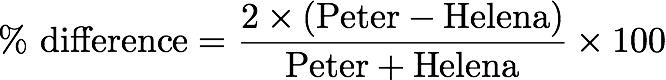

Date
& Time: Nov. 5, 2012
Location:
Campus
Computing
context: /Desktop/Research/CppHenyeyCode,
/Desktop/Research/BodenheimerCode/UnalteredCode/
Continuing
from last time:

Figure
1:
Comparison of the
atmos variables (tau, dTau, M, R, T, and P) generated at each step
in the RK4 integration process in Peter and Helena. As the
workflow illustrated in Diagram 1 indicates, Helena's atmos
subroutine started 'anew' at each new cell in the atmosphere, with
values fed in from Peter's code.
The
percent error b/w the two codes' results in Figure 1 was defined as:

The
take-home point from Figure 1 is:
the RK4 calculations-- the actual ODEs, or perhaps the way results
from the 4 intermediate steps are assembled-- are messed up in
Helena.
If
the step above works [it doesn't so disregard what follows],
then have Helena do an adaptive tau-step size algorithm (step size
halving --> results after 2 steps should be the same as result
after 1 step with the larger dTau value)
"Something
subtly wrong with my RK4 method... maybe not using an updated value
in one of the steps..."
To
Do:
Have
Peter's atmos code print out all of the dMk1, dMk2, etc. values for
all 4 variables at each dTau step.
Done. (/outputs/RK4_debugging_1.txt)
Have
Helena do the same, using the same 'starting anew at each new cell
with fresh values from Peter's code' approach that made the results
of Figure 1, here.
Done. (/misc_debugging_records/atmos_vals/dMRTPk1234_values_1.txt)
Go
thru each of the 4 variables, and compare their dk1, dk2, dk3, and
dk4 step values.
I
checked on the RK4 stepsize effect, and it looks like taking tau
stepsizes that are half the size that Helena normally uses does
produce atmos profiles that differ noticeably from the ones that use
'regular' stepsizes. That is another good indication that my
atmospheric RK4 method is subtly flawed somewhere. Now that I'm
convinced of that, time to start comparing the Mk1, Mk2, etc. values
b/w the two codes.
It
looks like the dMk1 and/or dRk1 values are the ones that differ the
most b/w the two codes (the T and P intermediate RK4 values do
disagree as well, but not as much, percentage-wise). So, start by
going through Helena's dMk1 and dRk1 calculations very carefully to
try to locate errors in those.
The
dPk values are too large. This causes the dTk values to be too small.
It also gives Pmax and Tmax values (at bottom of the atmos) that are
too large and small, respectively. Mtemp being too large could be
one thing that's causing all of this. So, need to get the Mtemp (aka
Zat) values out of Peter's code at each k-step w/in the atmos, and
compare it to the Mtemp values being generated w/in Helena.